Linux and HPC
with a focus on using the SWC’s HPC cluster.
Contents
- Hardware overview
- Basic Linux commands
- Introduction to High Performance Computing
- SWC HPC system
- Using the job scheduler
- Real-world examples on the SWC HPC:
- Pose estimation with SLEAP
- Spike sorting with spikeinterface
Hardware overview
- CPU (Central Processing Unit)
- General-purpose
- Split into cores (typically between 4 and 64)
- Each core can run a separate process
- Typically higher clock speed than GPU (~3-5GHz)
- GPU (Graphics Processing Unit)
- Originally for rendering graphics
- Thousands of cores
- Optimised for parallel processing of matrix multiplication
- Typically lower clock speed than CPU (~1-2GHz)
Hardware overview
Primary storage:
- Cache
- Small, fast memory
- Stores frequently accessed data
- Sits directly on the CPU/GPU
- Typically in the MB range with multiple levels
- Main memory (RAM/VRAM)
- Fast storage for data
- CPU/GPU can access data quickly
- Lost when machine is powered off
- Typically 8-512 GB range
Hardware overview
Secondary storage:
- Drive storage (HDD/SSD)
- Much slower than RAM
- SSDs faster than HDDs
- Typically in the GB-TB range
- Network storage (e.g. ceph)
- Shared storage accessible from multiple machines
- Typically in the TB-PB range
- High latency compared to local storage
Hardware overview
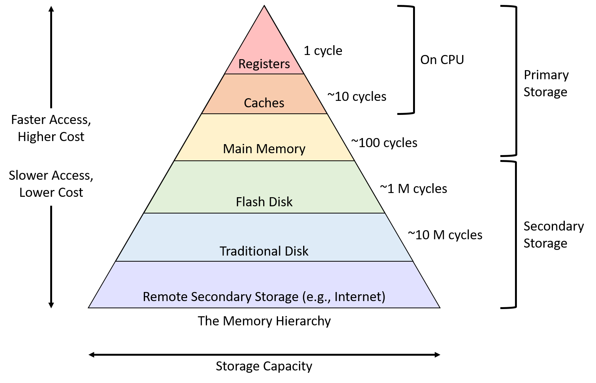
Hardware overview
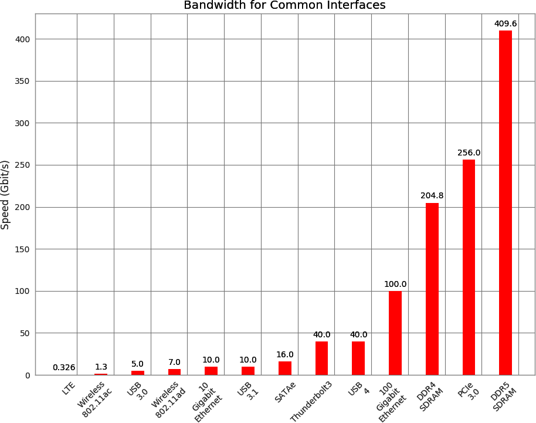
Performance considerations
- CPU
- Frequency is important for single-threaded tasks
- More cores can be better for parallel tasks
- Sometimes your local machine is faster than the HPC for CPU tasks
- GPU
- Great for parallel tasks (e.g. machine learning)
- Memory is important - make sure your data fits in VRAM
- Generation can be important, a new generation is typically ~10 – 20% faster
- Storage
- Best if you can keep data in primary memory (Cache/RAM)
- If data doesn’t fit in memory make sure it’s on fast storage (local)
Introduction to High Performance Computing (HPC)
- Lots of meanings
- Often just a system with many machines (nodes) linked together with some/all of:
- Lots of CPU cores per node
- Powerful GPUs
- Lots of memory per node
- Fast networking to link nodes
- Fast data storage
- Standardised software installation
Why?
- Run jobs too large for desktop workstations
- Run many jobs at once
- Efficiency (cheaper to have central machines running 24/7)
- In neuroscience, typically used for:
- Analysing large data (e.g. high memory requirements)
- Parallelising analysis/modelling (run on many machines at once)
SWC HPC hardware
(Correct at time of writing)
- Ubuntu 24.04
- 37 nodes
- 13 CPU nodes
- 24 GPU nodes
- ~2900 CPU cores
- 90 GPUs
- ~15 TB RAM
Logging in
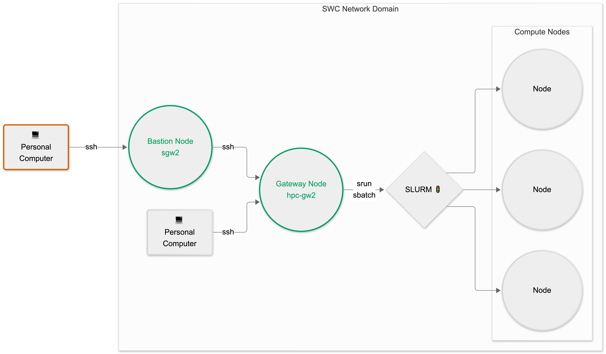
Logging in
Log into bastion node (not necessary within SWC network)
This node should only be used for navigating the file system, submitting jobs or editing scripts with a terminal text editor (e.g. nano or vim)
More details
See our guide at https://neuroinformatics.dev/howto/
File systems
/nfs/nhome/live/<USERNAME>or/nfs/ghome/live/<USERNAME>- “Home drive” (SWC/GCNU), also at
~/
- “Home drive” (SWC/GCNU), also at
/nfs/winstor/<group>- Old SWC research data storage/nfs/gatsbystor- GCNU data storage/ceph/<group>- Current research data storage/ceph/scratch- Not backed up, for short-term storage/ceph/apps- HPC applications
Note
You may only be able to “see” a drive if you navigate to it
Navigate to the scratch space
pwd and cd: Navigate Directories
cd [directory]– Changes the current working directory to the specified directory.cd ..– Move up one directory level.cd /path/to/directory– Go to a specific path.cd ~orcd– Go to the home directory.cd /– Go to the root directory.
pwd– Prints the current working directory.
ls: List Directory Contents
ls– Lists files and directories in the current working directory.ls -l– Displays detailed information about each file (permissions, owner, size, etc.).ls -a– Shows all files, including hidden files (files starting with a dot).ls -h– Displays sizes in human-readable format (e.g., KB, MB).ls -lah– Combines the above options.
mkdir: Make Directory
mkdir [directory_name]– Creates a new directory with the specified name.mkdir -p /path/to/dirto create nested directories.
rmdir and rm: Remove Directories and Files
rm [file]– Removes a file.rmdir [directory]– Removes an empty directory.rm -r [directory]- Removes a directory and its contents recursively.rm -f [file]- Removes to force remove a file (no undo be careful!).
mv and cp: Move, Rename and Copy
cp [source] [destination]– Copies a file or directory to the destination.mv [source] [destination]– Moves a file or directory to the destination.mvcan also be used to rename a file or directory if the source and destination directories match.
Input and Output
echo [text]– Displays text or outputs text to a file.echo $ENV_VAR– Displays the value of an environment variable.touch [filename]– Creates an empty file or updates the timestamp of an existing file.>– Redirects output to a file.>>– Appends output to a file.
View File Contents
cat [file]– Displays the contents of a file.less [file]– Opens a file in a scrollable viewer, allowing navigationnano [file]– Opens a file in the nano text editor for editing
Permissions and Ownership
chmod [permissions] [file]– Changes the permissions of a file or directory- Numeric notation is based on binary representation of permissions:
- Read: 100 (4)
- Write: 010 (2)
- Execute: 001 (1)
chmod 755 file.txtsets permissions torwxr-xr-x(user has read, write, execute; group and others have read and execute)
- Symbolic notation uses letters:
rfor read,wfor write, andxfor executeufor user,gfor group, andofor others (if skipped it applies to all)chmod u+x file.txtadds execute permission for the userchmod go-w file.txtremoves write permission for group and others
watch: Monitor Command Output
watch [command]– Repeatedly runs a command at intervals and displays the result.- Use
watch -n [seconds] [command]to change the interval.
man and help: Get Help
man [command]– Opens the manual page for a command.help [command]– Provides a short description of built-in commands.
|: Pipes!
Description:
|– Pipes the output of one command as input to another.- Useful for chaining commands together to perform complex operations.
Open on Demand
- Open on Demand (OOD) is a web-based interface for accessing the SWC HPC cluster
- See the [SWC OOD guide][https://liveuclac.sharepoint.com/sites/SSC/SitePages/Open-On-Demand-web-portal-&-Interactive-Applications.aspx]
- Demo!
HPC software
All nodes have the same software installed
- Ubuntu 24.04 LTS
- General linux utilities
- Modules
Modules
Preinstalled packages available for use, including:
- Python
- MATLAB
- julia
- miniconda
- mamba
- uv
- cuda
- brainglobe
- SLEAP
- FSL
- ants
- kilosort3
Using modules
List available modules
SLURM
- Simple Linux Utility for Resource Management
- Job scheduler
- Allocates jobs to nodes
- Queues jobs if nodes are busy
- Users must explicitly request resources
Check available resources
View a summary of the available resources
sirmpilatzen@hpc-gw2:~$ sinfo
PARTITION AVAIL TIMELIMIT NODES STATE NODELIST
cpu* up 10-00:00:0 1 down* enc1-node4
cpu* up 10-00:00:0 10 mix enc1-node[1-3,6,8-13]
cpu* up 10-00:00:0 2 alloc enc1-node[5,7]
a100 up 10-00:00:0 4 mix gpu-sr670-[20-23]
gpu up 10-00:00:0 18 mix gpu-350-[01,03-05],gpu-380-[10-18],gpu-sr670-[20-23],gpu-sr675-31
gpu up 10-00:00:0 1 idle gpu-350-02
gpu_lowp up 10-00:00:0 6 mix gpu-sr675-[31-35],gpu-xd670-30
cpu_backfill up 10-00:00:0 23 mix gpu-350-[01,03-05],gpu-380-[10-18],gpu-sr670-[20-23],gpu-sr675-[31-35],gpu-xd670-30
cpu_backfill up 10-00:00:0 1 idle gpu-350-02Check the queue
View currently running jobs, from everyone…
sirmpilatzen@hpc-gw2:~$ squeue
JOBID PARTITION NAME USER ST TIME NODES NODELIST(REASON)
3705995 a100 nette-rp kbiegun R 1:45:06 1 gpu-sr670-20
3705996 a100 nette-rp kbiegun R 1:45:06 1 gpu-sr670-20
3700888_2 a100 human_ta mmeyer R 23:20:39 1 gpu-sr670-21
3403594 cpu shrink_r wdorrell PD 0:00 1 (DependencyNeverSatisfied)
3664831_[154,156,2 cpu r50_clas isebti PD 0:00 1 (JobArrayTaskLimit)
3704854_[9-29%6] cpu dt_signa larsr PD 0:00 1 (JobArrayTaskLimit)
3705838_[73-79,81- cpu b2lameps eling PD 0:00 1 (Resources)
3014724 cpu modelbui careyh PD 0:00 1 (Dependency)Partitions
Think of them as logical queues. Three types:
- General partitions accessible to all, e.g.
cpu,gpu,a100 - Owned partitions for specific groups, e.g.
gpu_saxe,gpu_branco - Backfilling partitions to utilize spare hardware, e.g.
cpu_backfill,gpu_lowp
More details on SWC/GCNU Scientific Computing wiki
Submitting SLURM jobs
Types of jobs
- Interactive jobs: run commands with real-time feedback (e.g. for debugging)
- Batch jobs: submit scripts to run in the background
- Array batch jobs: submit multiple similar jobs at once
Warning
To spare the gateway node, always start a job (interactive or batch) before doing anything beyond simple filesystem navigation or terminal-based script editing.
Interactive job
Start an interactive job (bash -i) in the cpu partition (-p cpu) in pseudoterminal mode (--pty) with one CPU core (-n 1).
Tip
If the cpu partition is busy, you can cancel the request with Ctrl+C and try -p cpu_backfill instead.
Run some “analysis”
Clone some example scripts
Batch jobs
Check out batch script
#!/bin/bash
#SBATCH -p cpu # partition (queue)
#SBATCH -N 1 # number of nodes
#SBATCH --mem 1G # memory pool for all cores
#SBATCH -n 1 # number of cores
#SBATCH -t 0-0:1 # time (D-HH:MM)
#SBATCH -o slurm_output.out
#SBATCH -e slurm_error.err
# Exit immediately if any command fails
set -e
for i in {1..5}
do
./multiply.sh $i 10
doneSubmit a batch job
Run batch job
More details
See our SLURM arguments primer
Array jobs
Check out array script
#!/bin/bash
#SBATCH -p cpu # partition (queue)
#SBATCH -N 1 # number of nodes
#SBATCH --mem 1G # memory pool for all cores
#SBATCH -n 1 # number of cores
#SBATCH -t 0-0:1 # time (D-HH:MM)
#SBATCH -o slurm_array_%A-%a.out
#SBATCH -e slurm_array_%A-%a.err
#SBATCH --array=0-9%4
# Exit immediately if any command fails
set -e
# Array job runs 10 separate jobs, but not more than four at a time.
# This is flexible and the array ID ($SLURM_ARRAY_TASK_ID) can be used in any way.
echo "Multiplying $SLURM_ARRAY_TASK_ID by 10"
./multiply.sh $SLURM_ARRAY_TASK_ID 10 Submit an array job
Run array job
Cancelling jobs
Cancel a job
Tip
You can find the job ID with squeue --me.
Running Python interactively
So far, we’ve been running bash scripts, but you can also run Python code in the same way.
Exit the Python session with exit() , then exit the interactive job with exit.
Submit a Python script
As an exercise, do the exact same thing with a batch job.
- Use
nanoto create a Python script calledhello.pyand add a line printing “Hello HPC world!” to it. - Create a batch script called
hello_batch.shthat runs the Python script. - Submit the batch script and check the output logs.
Tip
Want to create and use your own Python environments? Stay tuned, this is described towards the end of this course.
Green computing: make every job count
HPC jobs use energy (and emit carbon) whether or not they produce anything useful.
- Know what each job adds to your research project before running it
- Test input files and job scripts with small/short jobs (e.g. one video, a few epochs) before scaling up
- Fail early: make scripts stop at the first error (e.g.
set -ein bash batch scripts) - Achieve the same goals with fewer jobs, e.g. sample parameter spaces wisely rather than exhaustively
Green computing: request only what you need
- Request only the CPUs, memory and time your job needs
- Only request a GPU if your code uses it
- Cancel jobs that are stuck or misconfigured (
scancel <JOBID>) - Not urgent? Let CATS (Climate-Aware Task Scheduler) pick the lowest-carbon start time and submit with
sbatch --begin
See also SWC/GCNU Scientific Computing wiki
Green computing: check, then right-size
After a job finishes, compare what it used with what you requested:
MaxRSSmuch lower thanReqMem? Request less memory next timeElapsedmuch shorter thanTimelimit? Request less time- Estimate your job’s carbon footprint with the Green Algorithms calculator
Pose estimation with SLEAP
Let’s look at a real-world example. Learning goals:
- using a pre-installed module (here, SLEAP)
- requesting GPU resources for a job
Pose estimation
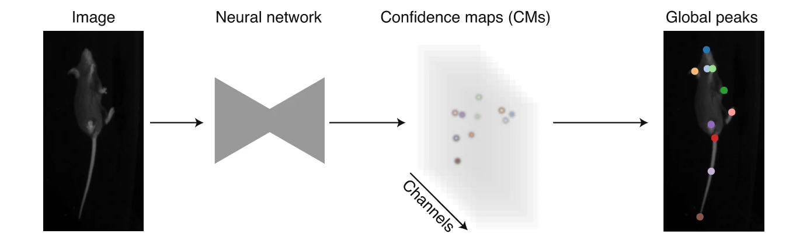
Pose estimation software
DeepLabCut: transfer learning
SLEAP:smaller networks
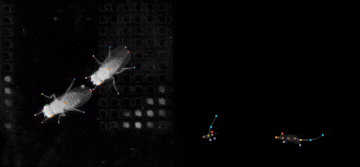
Top-down pose estimation
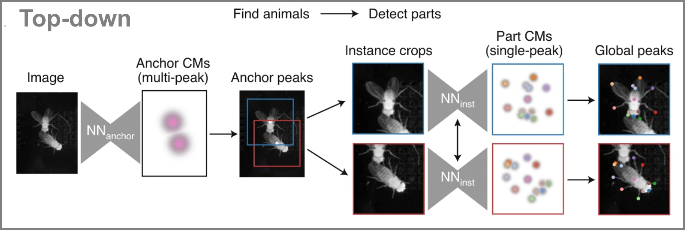
SLEAP workflow
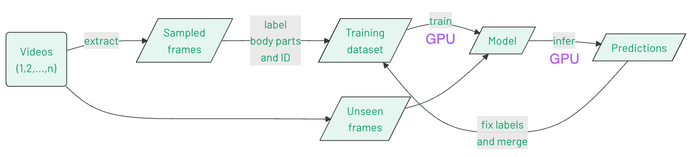
Warning
This workshop uses SLEAP version 1.3.4 (TensorFlow backend), with documentation available at legacy.sleap.ai.
HPC modules for SLEAP ≥ 1.5.0 (PyTorch backend) will be added in future.
Sample data
/ceph/scratch/neuroinformatics-dropoff/SLEAP_HPC_test_data/CalMS21
- Contains an example video from the Caltech Mouse Social Interactions (CalMS21) Dataset (Sun et al. 2021).
- SLEAP project, made by Chang Huan Lo, with labeled frames, trained models and prediction results.
More details
See animals-in-motion.neuroinformatics.dev/latest/prerequisites for more information about the data.
Labeling data locally
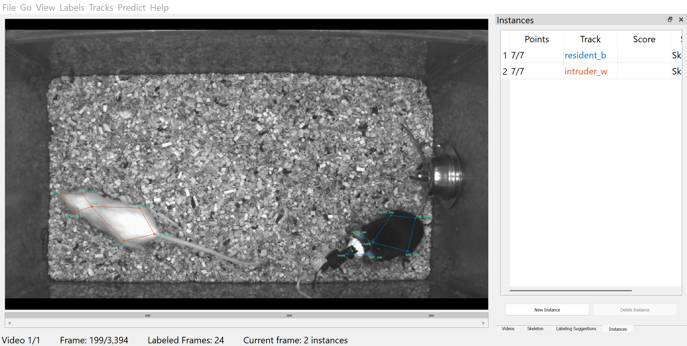
Exporting a training job package
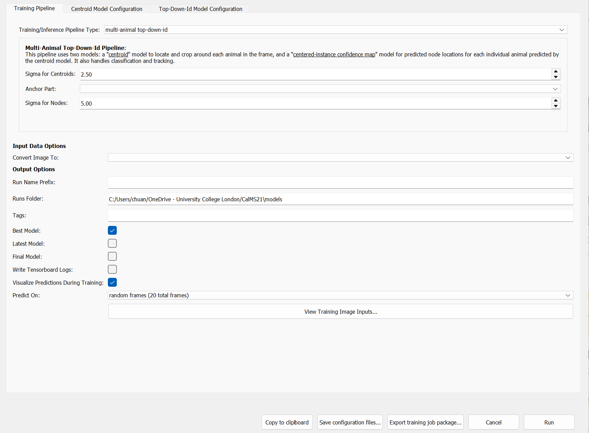
Training job package contents
Copy the unzipped training package to your scratch space and inspect its contents:
What’s in the SLEAP scripts?
Training
Get SLURM to run the script
Suitable for debugging (immediate feedback)
Start an interactive job with one GPU
Execute commands one-by-one, e.g.:
See example batch scripts
Batch script for training
sleap_train_slurm.sh
#!/bin/bash
#SBATCH -J slp_train # job name
#SBATCH -p gpu # partition (queue)
#SBATCH -N 1 # number of nodes
#SBATCH --mem 16G # memory pool for all cores
#SBATCH -n 4 # number of cores
#SBATCH -t 0-06:00 # time (D-HH:MM)
#SBATCH --gres gpu:1 # request 1 GPU (of any kind)
#SBATCH -o slurm.%x.%N.%j.out # STDOUT
#SBATCH -e slurm.%x.%N.%j.err # STDERR
#SBATCH --mail-type=ALL
#SBATCH --mail-user=user@domain.com
# Exit immediately if any command fails
set -e
# print GPU info
nvidia-smi
# Load the SLEAP module
module load SLEAP
# Define the directory of the exported training job package
SLP_JOB_NAME=mouse044_task1_annotator1.training_job
SLP_JOB_DIR=/ceph/scratch/$USER/$SLP_JOB_NAME
# Go to the job directory
cd $SLP_JOB_DIR
# Run the training script generated by SLEAP
./train-script.shMonitoring the training job
View the status of your queued/running jobs with squeue --me
View status of running/completed jobs with sacct:
Run sacct with some more helpful arguments, e.g. view jobs from the last 24 hours, incl. time elapsed and peak memory usage in KB (MaxRSS):
View trained models
While you wait for the training job to finish, you can copy and inspect the trained models from a previous run:
cd /ceph/scratch/neuroinformatics-dropoff/SLEAP_HPC_test_data/CalMS21/better_model
cp -R 250806_174722.centroid.n=679 /ceph/scratch/$USER/mouse044_task1_annotator1.training_job/models/
cp -R 250807_162146.multi_class_topdown.n=679 /ceph/scratch/$USER/mouse044_task1_annotator1.training_job/models/
cd /ceph/scratch/$USER/mouse044_task1_annotator1.training_job/models
ls -1Evaluate trained models
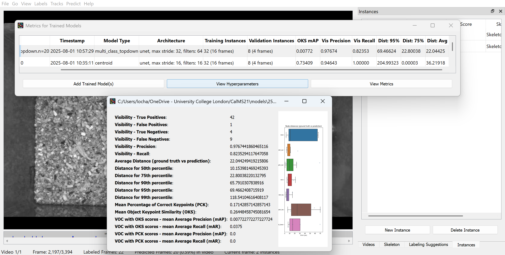
SLEAP workflow
Batch script for inference
sleap_infer_slurm.sh
#!/bin/bash
#SBATCH -J slp_infer # job name
#SBATCH -p gpu # partition
#SBATCH -N 1 # number of nodes
#SBATCH --mem 32G # memory pool for all cores
#SBATCH -n 8 # number of cores
#SBATCH -t 0-01:00 # time (D-HH:MM)
#SBATCH --gres gpu:1 # request 1 GPU
#SBATCH -o slurm.%x.%N.%j.out # write STDOUT
#SBATCH -e slurm.%x.%N.%j.err # write STDERR
#SBATCH --mail-type=ALL
#SBATCH --mail-user=user@domain.com
# Exit immediately if any command fails
set -e
# print GPU info
nvidia-smi
# Load the SLEAP module
module load SLEAP
# Define directories for exported SLEAP job package and videos
SLP_JOB_NAME=mouse044_task1_annotator1.training_job
SLP_JOB_DIR=/ceph/scratch/$USER/$SLP_JOB_NAME
VIDEO_DIR=/ceph/scratch/neuroinformatics-dropoff/SLEAP_HPC_test_data/CalMS21
VIDEO_PREFIX=mouse044_task1_annotator1
# Go to the job directory
cd $SLP_JOB_DIR
# Make a directory to store the predictions
mkdir -p predictions
# Run the inference command
sleap-track $VIDEO_DIR/${VIDEO_PREFIX}.mp4 \
-m $SLP_JOB_DIR/models/250806_174722.centroid.n=679/training_config.json \
-m $SLP_JOB_DIR/models/250807_162146.multi_class_topdown.n=679/training_config.json \
-o predictions/${VIDEO_PREFIX}_predictions.slp \
--gpu auto \
--no-empty-frames \
--batch_size 1Run inference job
- Edit and save the batch script
- Submit the job
- Monitor the job
Run inference as an array job

Batch script for array job
sleap_infer_array_slurm.sh
#!/bin/bash
#SBATCH -J slp_infer # job name
#SBATCH -p gpu # partition
#SBATCH -N 1 # number of nodes
#SBATCH --mem 32G # memory pool for all cores
#SBATCH -n 8 # number of cores
#SBATCH -t 0-01:00 # time (D-HH:MM)
#SBATCH --gres gpu:1 # request 1 GPU
#SBATCH -o slurm.%x.%N.%j.out # write STDOUT
#SBATCH -e slurm.%x.%N.%j.err # write STDERR
#SBATCH --mail-type=ALL
#SBATCH --mail-user=user@domain.com
#SBATCH --array=0-2
# Exit immediately if any command fails
set -e
# print GPU info
nvidia-smi
# Load the SLEAP module
module load SLEAP
# Define directories for exported SLEAP job package and videos
SLP_JOB_NAME=mouse044_task1_annotator1.training_job
SLP_JOB_DIR=/ceph/scratch/$USER/$SLP_JOB_NAME
VIDEO_DIR=/ceph/scratch/neuroinformatics-dropoff/SLEAP_HPC_test_data/CalMS21
VIDEOS_PREFIXES=(mouse044_task1_annotator1 mouse045_task1_annotator1 mouse046_task1_annotator1)
CURRENT_VIDEO_PREFIX=${VIDEOS_PREFIXES[$SLURM_ARRAY_TASK_ID]}
echo "Current video prefix: $CURRENT_VIDEO_PREFIX"
# Go to the job directory
cd $SLP_JOB_DIR
# Make a directory to store the predictions
mkdir -p predictions
# Run the inference command
sleap-track $VIDEO_DIR/${CURRENT_VIDEO_PREFIX}.mp4 \
-m $SLP_JOB_DIR/models/250806_174722.centroid.n=679/training_config.json \
-m $SLP_JOB_DIR/models/250807_162146.multi_class_topdown.n=679/training_config.json \
-o predictions/${CURRENT_VIDEO_PREFIX}_array_predictions.slp \
--gpu auto \
--no-empty-frames \
--batch_size 1Further reading
Python on the HPC
Until now, we have used preinstalled modules.
But more realistically, you’ll want to run your own code. In Neuroscience the most popular language is Python.
Goal: run a Python script on the HPC.
Python is an ecosystem
- There are 800,000+ Python packages, e.g.
numpy,pandas,scikit-learn. - An environment is a collection of compatible packages.
- For each “big” piece of analysis you do (spike sorting, pose estimation, downstream analysis) you should have a different environment.
- Ideally, you want to be able to use the same environment locally or on the HPC.
- To achieve this, we’ll use
uv(alternative toconda,poetry,mamba, …).
Getting started locally (optional)
Let’s create a Python project locally:
Install uv: https://docs.astral.sh/uv/getting-started/installation/
Create a directory called
spike_times_analysisOpen the directory in the terminal and check you’re in the right place
- Initialize a Python project using uv
- Add a package
Files that manage your environment
uv has created a bunch of files. pyproject.toml is a description of your project, including which packages you’ve included. The most important list is the dependencies.
- Task: Add another package using
uv add ??and check yourpyproject.toml.
If you give this pyproject.toml file to a friend, they’ll be able to (approximately) remake your environment.
Run some code
Let’s write some code. I’ll save it at spike_times_analysis/scripts/analyse_spikes.py
And try to run it
What is uv run
uv run ?? does the following sequence of events:
- Checks your
pyproject.tomland figures out which packages and package versions you need - Creates (or updates) a virtual environment at
.venv - Activates the environment
- Runs
python ??
Repeat, on the HPC
Let’s do the same thing, but now on the HPC
- ssh onto the HPC
- Get onto a compute node
- Go to your scratch folder.
- Create a directory called
spike_sort_pipeline - Enter the directory
uvis a module on the HPC. Load it.- Initialise a project using
uv
A test Python script
Create a test Python script in spike_sort_pipeline/test.py
And run it
Where to keep your environment
By default,
uvsaves your environment in your project folder.It also keeps a cache so that if you use the same package in several projects, it can “share” it.
This is usually fine.
But on the HPC there are many physical drives “stuck together” to look like the
ceph. It’s a good idea to insist thatuvuses a cache and environment location on the same physical storage.We can do this by setting the
UV_PROJECT_ENVIRONMENTvariable, as we’ll see.
Run using a script
The real power of the HPC comes when we can submit jobs to run scripts. Let’s create a bash script called test.sh containing
#!/bin/bash
#SBATCH -p cpu
#SBATCH -N 1
#SBATCH --mem 1G
#SBATCH -n 1
#SBATCH -t 0-0:1
#SBATCH -o test_output.out
#SBATCH -e test_error.err
set -e
module load uv
export UV_PROJECT_ENVIRONMENT="/ceph/python_envs/YOURUSERNAME/spike_sort_pipeline"
cd /ceph/scratch/YOURUSERNAME/spike_sort_pipeline/
uv run test.pyand submit it
Real world example
We’re going to use a GPU to spike sort a Neuropixels recording using SpikeInterface and Kilosort.
First, let’s add both these packages to the spike_sort_pipeline project
and check they are there
Write a spike sorting pipeline
Make a spike sorting file at spike_sort_pipeline/spike_sort.py
import spikeinterface.full as si
recording = si.read_openephys('/ceph/scratch/neuroinformatics-dropoff/neuropixel2_data')
recording_one_shank = recording.split_by('group')[0]
sorting = si.run_sorter('kilosort4', recording_one_shank, remove_existing_folder=True, use_binary_file=False, verbose=True)
analyzer = si.create_sorting_analyzer(
sorting=sorting,
recording=si.bandpass_filter(si.common_reference(recording_one_shank)),
folder = 'kilosort4_sorting_analyzer',
format='binary_folder'
)
analyzer.compute(['random_spikes', 'templates', 'unit_locations', 'correlograms', 'spike_amplitudes', 'spike_locations', 'quality_metrics'])(You can find this file at /ceph/scratch/neuroinformatics-dropoff/spike_sort.py)
And run it (just to test)
Submit a proper job
Make a bash script called spike_sort.sh:
#!/bin/bash
#SBATCH -J spike_sort
#SBATCH -p gpu
#SBATCH --gres=gpu:1
#SBATCH -N 1
#SBATCH --mem 32G
#SBATCH -n 8
#SBATCH -t 0-1:0
#SBATCH -o spike_sort_%j.out
#SBATCH -e spike_sort_%j.err
set -e
module load uv
export UV_PROJECT_ENVIRONMENT="/ceph/python_envs/YOURUSERNAME/spike_sort_pipeline"
cd /ceph/scratch/YOURUSERNAME/spike_sort_pipeline/
uv run spike_sort.pyand submit it
The output
This script creates a SortingAnalyzer. This is the “end point” of a SpikeInterface spike sorting pipeline. You can take a look at the results using SpikeInterface-GUI.
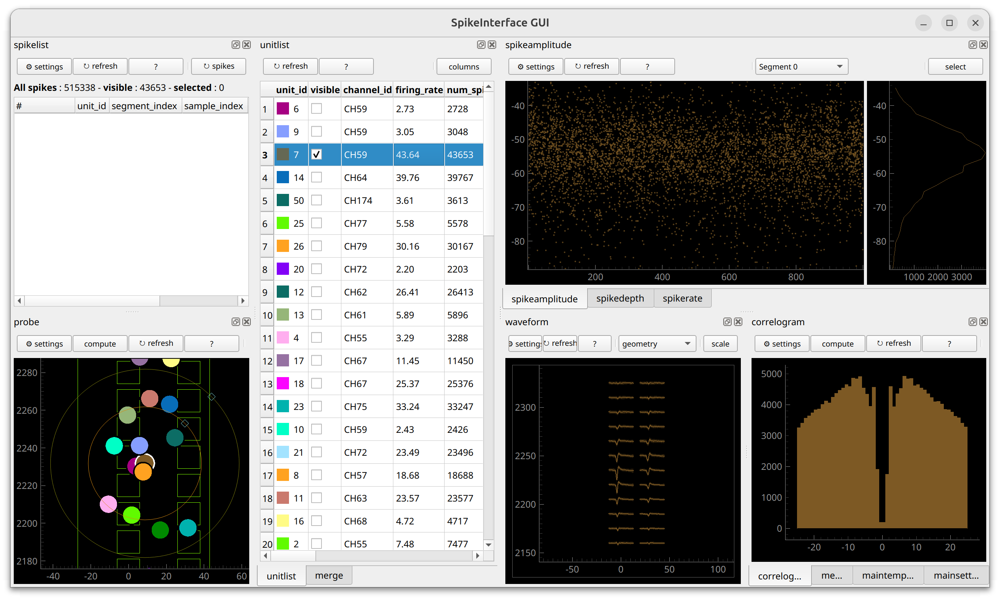

SWC | October 2026